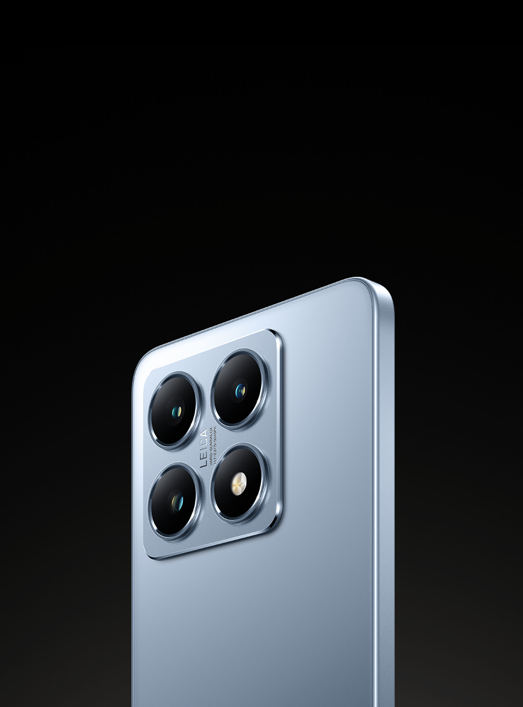
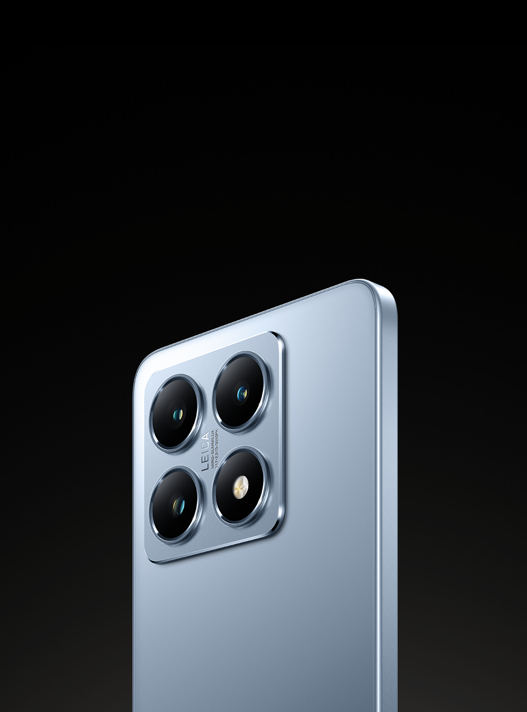
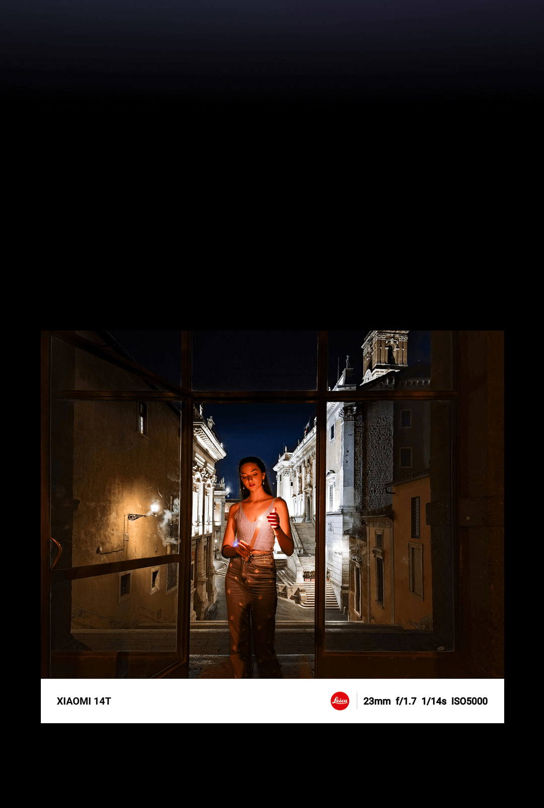
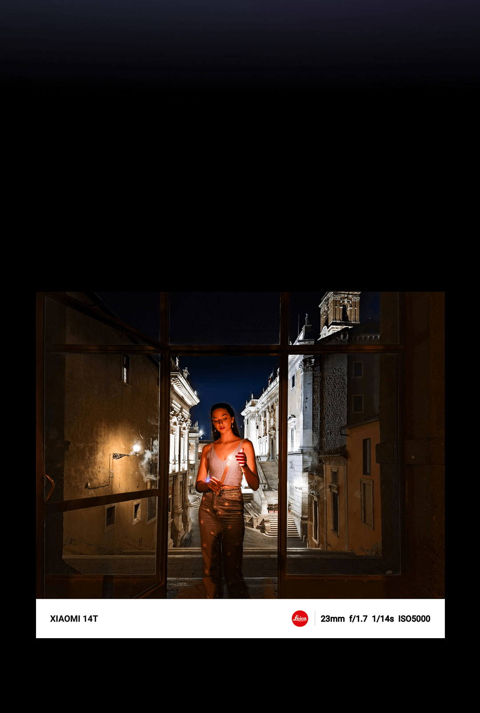

Xiaomi BioComfort couro PU
O tom cinza-esverdeado personifica a vida — um tom fresco e elegante que revela uma vitalidade e vibração únicas.
Contém limão verdadeiro
Feito de couro PU ecológico multicamadas, ele apresenta uma base feita de tecido 100% reciclado e 50% de materiais de base biológica, incluindo 50% de fibra de limão. O design é ecológico e durável.
*Dados testados pelos Laboratórios Internos da Xiaomi, os resultados reais podem variar. *A capa traseira é feita de material PU, PET reciclado e materiais de carbono de base biológica. O nome da descrição pode variar de acordo com a região.
A luz é a essência da fotografia, transformando momentos em memórias e criando imagens com profundidade, riqueza e senso de história.
Coprojetada com a Leica e com desempenho aprimorado em baixa luminosidade, a Xiaomi 14T Series permite que os usuários dominem a luz. Desbloqueie um novo reino de imagens móveis e entregue-se à sua expressão criativa, a qualquer hora e em qualquer lugar.
 

ƒ/1.7 grande abertura Saboreie a beleza da noite
A lente de grande abertura da Leica é excelente para capturar nuances tonais vívidas, de sombras profundas a realces brilhantes, em cenas distantes com pouca luz, garantindo imagens noturnas realistas.
Capture a beleza da luz e da sombra com detalhes excepcionais
 


Retrato Leica
O Leica Portrait foca mais em retratos e alcança uma aparência mais realista e natural. Remodele a estética da fotografia com um século de expertise óptica acumulada.
Retrato do Mestre
O Xiaomi 14T suporta o modo Master Portrait, apresentando estilos de retrato na faixa focal de 23 mm a 75 mm. Ele captura fotos de retrato com profundidade aprimorada, detalhes e efeitos bokeh mais naturais.
Modo filme
O Xiaomi 14T suporta o modo de filme, que tem como padrão a proporção de aspecto de filme convencional de 2,39:1, oferecendo o efeito de desfoque cinematográfico. Seu recurso de troca de foco permite capturar vídeos cinematográficos e narrativos.
MasterCinema
A câmera avançada do Xiaomi 14T captura vídeos dinâmicos de 10 bits em Rec. 2020, oferecendo detalhes vívidos e visuais HDR que refletem a visão humana. Obtenha profundidade cinematográfica e tons de cinza matizados com um único clique.
Modo diretor
O modo Diretor apresenta uma interface de câmera de filme profissional com controles de parâmetros avançados, suportando até 4K a 60 quadros por segundo. Ele suporta filmagem em formato de log e também pode se conectar a um Pad ou smartphone para monitoramento, oferecendo uma experiência abrangente de filmagem profissional.
Pesquise instantaneamente o que você vê no seu telefone. Uma ação simples inicia uma pesquisa no Google sem sair do aplicativo ou conteúdo em que você está. Pesquise qualquer imagem, vídeo ou texto na sua tela. Circule, destaque, rabisque ou toque para identificar o que você está curioso, sem necessidade de capturas de tela.
*O Círculo para Pesquisar com o Google estará disponível em 6 de outubro de 2024. *Google e Android são marcas registradas da Google LLC. Círculo para pesquisar com o Google disponível em dispositivos selecionados e conexão com a internet necessária. Funciona em aplicativos e superfícies compatíveis. Os resultados podem variar dependendo das correspondências visuais.
Intérprete de IA
Apresentando o AI Interpreter, seu melhor assistente de tradução em tempo real para interações presenciais, chamadas telefônicas ou reuniões on-line.
Frente a frente Chamada telefônica Reunião
Filme de IA
Edite vlogs facilmente
Crie vídeos curtos e cinematográficos sem esforço com a ajuda do AI Film. Selecione as fotos e vídeos que deseja usar, descreva o que você imagina e observe enquanto o AI Film faz o resto.

Edição de imagem de IA
Utilizando modelos de IA no dispositivo, edite suas imagens de forma inteligente. Expanda suas imagens com geração de contexto inteligente ou use o AI Eraser Pro para remover partes indesejadas.
ERetrato de IA
Crie imagens personalizadas de si mesmo com o AI Portrait. Gere um avatar de IA, insira sua descrição e veja diferentes versões de si mesmo, como você imaginar.
Exibição de IA mais inteligente
A tela ajusta dinamicamente a temperatura da cor e o brilho de acordo com diferentes cenários de uso e a hora do dia, reduzindo efetivamente a luz azul, protegendo a saúde dos olhos e garantindo uma melhor experiência visual.

*A tela suporta uma taxa máxima de atualização de 144 Hz. A taxa de atualização da tela pode ser ligeiramente diferente em diferentes interfaces de aplicativos e qualidade de imagem em jogos. Confira a experiência real.
*Gemini é uma marca comercial da Google LLC. Aplicativo móvel Gemini disponível em dispositivos, idiomas e países selecionados. Conexão com a Internet necessária. Verifique a exatidão das respostas.
*Google e Android são marcas comerciais da Google LLC. Circle to Search with Google disponível em dispositivos selecionados e requer conexão com a Internet. Funciona em aplicativos e superfícies compatíveis. Os resultados podem variar dependendo das combinações visuais.
*Intérprete de IA, Anotações de IA e Gravador de IA disponíveis nos idiomas selecionados. Conexão com a Internet necessária. Verifique a exatidão das respostas.
*A disponibilidade de recursos de IA pode variar de acordo com a região. *Consulte o site local para obter mais informações.
*O dispositivo foi testado e certificado como resistente a respingos, água e poeira em condições de laboratório específicas com a classificação IP68 de proteção de entrada com base nas normas IEC 60529:1989+A1:1999+A2:2013. Observe que as condições de teste de resistência à água incluem: submersão em água doce estática até uma profundidade de 2 metros, por até 30 minutos, com um delta de temperatura entre a água e o produto de 5 K ou menos. Tais características de resistência à água referem-se apenas a condições específicas testadas em um ambiente de laboratório, que não correspondem às condições normais de uso pelos consumidores. Portanto, a proteção contra entrada não é garantida se o produto for submetido a ambientes além das condições de teste. Recomendamos que você não realize o teste sozinho. Não recomendado para uso na praia ou piscina. A proteção contra entrada pode se deteriorar devido ao desgaste diário, a danos físicos e/ou à desmontagem necessária em caso de reparo. Evite carregar o produto, operar os botões físicos ou remover a bandeja do SIM quando o produto estiver exposto à umidade. Consulte com atenção o manual do usuário para obter outras instruções de segurança. A garantia não cobrirá os danos causados por líquido em ambientes fora da condição de teste de IP68.
*A capacidade do Wi-Fi 6E/Wi-Fi 6 pode variar de acordo com a disponibilidade regional e o suporte de rede local. A conectividade Wi-Fi (incluindo bandas de frequência de Wi-Fi, padrões de Wi-Fi e outros recursos ratificados nas especificações do padrão IEEE 802.11) pode variar com base na disponibilidade regional e no suporte de rede local. A função pode ser adicionada via OTA quando e onde for aplicável. A conectividade Wi-Fi (incluindo bandas de frequência de Wi-Fi, padrões de Wi-Fi e outros recursos ratificados nas especificações do padrão IEEE 802.11) pode variar com base na disponibilidade regional e no suporte de rede local. A função pode ser adicionada via OTA quando e onde for aplicável.
*Consulte o vendedor local sobre a disponibilidade do adaptador de energia na caixa..
*Mais marcas d'água Leica podem ser adicionadas à Galeria.
*Circle to Search with Google estará disponível em 6th de outubro de 2024.
*Spotify Premium: A oferta se aplica somente ao plano individual Spotify Premium. Cancele a qualquer momento. Válido apenas para usuários que não tenham experimentado a versão Premium antes. Resgate a oferta recebida até 08 de agosto de 2026. Termos aplicáveis. Visite mi.com/global/event/spotify-premium/ para obter mais informações.
*YouTube Premium: Somente novos usuários. Termos aplicáveis. A taxa de assinatura mensal começa no final da avaliação. Cancele a qualquer momento.
*93,3% refere-se à proporção da área de exibição e da tela de vidro.
*Recursos de IA disponíveis via OTA a partir de 26 de setembro de 2024.
*A tampa traseira é feita de material PU, PET reciclado e materiais à base de carbono. O nome da descrição pode variar de acordo com a região.